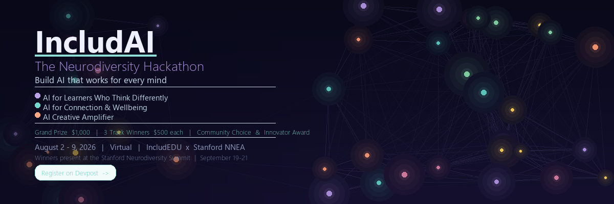

Designed with, not just for
Every submission was asked to involve real neurodivergent users in design or testing. The strongest projects showed not only technical creativity, but also evidence that user feedback shaped the build.
IncludEDU x Stanford NNEA
387 participants. 92 submitted projects. One shared mission: build AI tools with neurodivergent learners, not just for them.

Event Recap
IncludAI invited student builders around the world to design from a different starting point: what would AI look like if neurodivergent learners were centered from day one?
Every submission was asked to involve real neurodivergent users in design or testing. The strongest projects showed not only technical creativity, but also evidence that user feedback shaped the build.
Teams explored task initiation, emotional vocabulary, social practice, creative expression, and learning tools that adapt to the learner instead of asking the learner to adapt first.
The hackathon became an entry point into IncludEDU, Stanford NNEA, and a wider student-led community committed to neurodiversity-affirming education.
What IncludAI Judged Differently
One of the most active conversations in the IncludAI Discord came from participants who were strong developers: some wondered why the winning projects were not always the most technically complex. That question revealed exactly what made this hackathon different.
IncludAI was never about rewarding the most advanced tech stack for its own sake. It was about finding projects that could genuinely help neurodivergent communities. For neurotypical developers especially, the event was a wake-up call: a good ND-centered application is not necessarily the one with the most sophisticated engineering. It is the one built from deep listening, real community engagement, and a clear understanding of the pain points neurodivergent users actually live with.
The strongest submissions showed that accessibility is not a feature added at the end. It is a design philosophy that starts with humility: entering the community, asking better questions, and building what people need rather than what looks impressive from the outside.
Award Winners
Each winner showed a different way AI can support learners, connection, wellbeing, or creativity when lived experience is treated as design expertise.
By Lovejeet Singh
EmoLens was born from a deeply personal place. Lovejeet was inspired by his sister's work at a school for autistic children in India, where he saw students struggle to translate sensory and emotional experiences into language others could understand. His project turns physical sensations into clear emotional vocabulary and communication cards, making abstract internal experiences easier to express. The judges recognized EmoLens as a powerful example of what IncludAI set out to encourage: AI shaped by real people, real needs, and genuine care.
View on DevpostBy Jack Page and Sean Cryan
TinyStep won Track 1 for tackling one of the hardest parts of learning with ADHD and executive-function challenges: getting started. The project turns overwhelming assignments into steps so small that beginning feels possible. Jack's response after the announcement reflected the spirit of the event: gratitude, humility, and a clear willingness to keep coordinating next steps. TinyStep stood out because it understood that accessibility is often not about doing more for the learner, but making the first action feel reachable.
View on DevpostBy Michael Chang
Nexus won Track 2 for creating a safe space where neurodivergent users can practice connection, express themselves, and be understood. Michael first found IncludAI through Stanford's SNP REACH Project and shared that the hackathon community left a strong impression on him. Beyond the project itself, he expressed excitement about continuing to learn, build, and contribute through IncludEDU and Stanford NNEA. Nexus represents the Track 2 mission beautifully: using AI not to replace human connection, but to make social practice and wellbeing support feel safer and more accessible.
View on DevpostBy Jaydon Asher
Atelier won Track 3 as an AI-powered art mentor designed with neurodivergent creators in mind. The project's story is especially meaningful because it grew from lived creative experience: Jaydon loves drawing as a calming, emotionally regulating practice, and that personal connection shaped the product's direction. Built and tested with Brad throughout the week, Atelier offers low-anxiety, strengths-first guidance that celebrates creative instincts before suggesting next steps. It is exactly the kind of creative amplifier IncludAI hoped to surface: a tool that helps neurodivergent creators feel supported without being corrected out of their own voice.
View on DevpostBy Yibo Yan, Ryan Zhang, Dingtang Sun, and Suri Zhang
Millie received the Neurodivergent Innovator Award for centering lived neurodivergent experience in both the research and design process. Led by Yibo Yan with teammates Ryan Zhang, Dingtang Sun, and Suri Zhang, the project grew from direct insight into task initiation, focus, and body doubling. Millie appears like a classmate already working on the same assignment, asks small judgment-based questions, then steps back once momentum begins. The result is an AI companion built around a subtle but powerful insight: for many learners, the hardest part is not finishing the work, but beginning it.
View Millie on DevpostKeep Building
These five winners are part of a larger cohort of 92 submitted projects. See what students built across learning, connection, wellbeing, and creative expression.